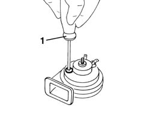

5550B34 HORN TONE - ADJUST
- Path
- Procedures > 55 ELECTRICAL EQUIPMENT > 5550 WARNING AND MANOEUVRING INDICATORS > 5550B HORNS > 5550B34 HORN TONE - ADJUST
- Kind
- repair procedure (removal / refitting; the operation number is the code)
- Applies to
- all engines; all production periods
- Interactive page
- https://sloeber94.github.io/elrnDB-aGt/en/#/125001689
Applies to: all engines; all production periods
Op. 7055B42 LH OR RH REFLECTOR(ONE) ON REAR BUMPERS - R R
(right side)
Op. 5550B30 L/H OR R/H HORN (ONE) - R+R
1. Act on the special adjustment screw and adjust the tone of the horn.

Applies to: all engines; all production periods
Test the horn to check that the tone is correct.
Op. 5550B30 L/H OR R/H HORN (ONE) - R+R
Op. 7055B42 LH OR RH REFLECTOR(ONE) ON REAR BUMPERS - R R
(right side)